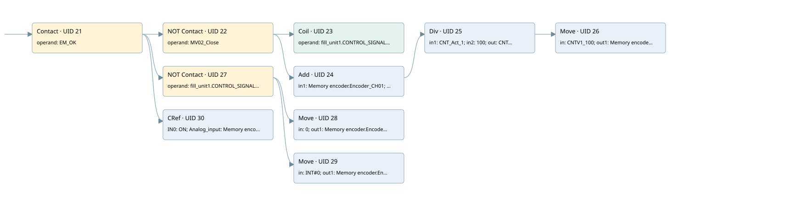

data management mv02
analog input conversion · 검색 색인 순서 33 · 원본 내부 NID 추정 46
백업 PLF 원본의 3146169 바이트 위치에서 복원한 XML. 검색 문서 1763의 객체 키 161022002f6b000000000000와 연결했다. 이름 해석 22/22개. 남은 RefId는 상수 또는 미해석 참조다.
연결 구조 다시 그리기
원본 Part/PCon/Wire를 이용한 연결도다. TIA 화면의 래더 배치 또는 실행 결과를 재현한 그림은 아니다. 핀 연결은 아래 표와 원본 XML을 기준으로 읽는다. 노드 위에 마우스를 두면 피연산자 이름을 볼 수 있다.

접점·코일·블록과 피연산자
| Part UID | Gate | Negated 핀 | 연결 피연산자 |
|---|---|---|---|
| 21 | Contact | operand = EM_OK | |
| 22 | Contact | operand | operand = MV02_Close |
| 23 | Coil | operand = fill_unit1.CONTROL_SIGNALS.SW_GATE1 | |
| 24 | Add | in1 = Memory encoder.Encoder_CH01; in2 = fill_unit1.ACT_CNTV1; out = CNT_Act_1 | |
| 25 | Div | in1 = CNT_Act_1; in2 = 100; out = CNTV1_100 | |
| 26 | Move | in = CNTV1_100; out1 = Memory encoder.Encoder_CH01_10 | |
| 27 | Contact | operand | operand = fill_unit1.CONTROL_SIGNALS.SW_GATE1 |
| 28 | Move | in = 0; out1 = Memory encoder.Encoder_CH01_10 | |
| 29 | Move | in = INT#0; out1 = Memory encoder.Encoder_CH01 | |
| 30 | CRef | 호출 참조: Signal linearization; IN0 = ON; Analog_input = Memory encoder.Encoder_CH01_10; Coeff = Coeff.COEFF_TRASM_MV02; Zero = Coeff.ZERO_TRASM_MV02; OutValue = Data.Pot_MV02; Out_of_range = Allarm.Pot_MV02_OFR |
접점 경로를 펼친 조건식
Contact·O/A·비교기의 원본 연결을 읽기 쉽게 펼친 보조 해석이다. POWER는 전원 레일 시작을 뜻한다. 호출 블록·에지·타이머의 내부 동작과 다중 쓰기 순서는 이 표로 실행 검증하지 않았다. 미해석 핀과 RefId는 원문 연결표에서 확인한다.
| UID | 동작 | 대상 | 원본 접점 경로 | 내용 |
|---|---|---|---|---|
| 23 | Coil | fill_unit1.CONTROL_SIGNALS.SW_GATE1 | (EM_OK AND NOT [MV02_Close]) | 조건에 따른 Coil 기록 |
| 26 | Move | Memory encoder.Encoder_CH01_10 | Div UID 25.eno (블록 동작 확인) | Move 입력 CNTV1_100 |
| 28 | Move | Memory encoder.Encoder_CH01_10 | (EM_OK AND NOT [fill_unit1.CONTROL_SIGNALS.SW_GATE1]) | Move 입력 0 |
| 29 | Move | Memory encoder.Encoder_CH01 | (EM_OK AND NOT [fill_unit1.CONTROL_SIGNALS.SW_GATE1]) | Move 입력 INT#0 |
원본 배선 연결
| Wire UID | 동일 Wire 연결 끝점 |
|---|---|
| 53 | Powerrail {} ↔ Part 21.in |
| 54 | ORef 32 (EM_OK) ↔ Part 21.operand |
| 55 | Part 21.out ↔ Part 22.in ↔ Part 27.in ↔ Part 30.en |
| 33 | ORef 56 (MV02_Close) ↔ Part 22.operand |
| 57 | Part 22.out ↔ Part 23.in ↔ Part 24.en |
| 58 | ORef 34 (fill_unit1.CONTROL_SIGNALS.SW_GATE1) ↔ Part 23.operand |
| 59 | ORef 35 (Memory encoder.Encoder_CH01) ↔ Part 24.in1 |
| 60 | ORef 36 (fill_unit1.ACT_CNTV1) ↔ Part 24.in2 |
| 61 | Part 24.eno ↔ Part 25.en |
| 62 | Part 24.out ↔ ORef 37 (CNT_Act_1) |
| 63 | ORef 38 (CNT_Act_1) ↔ Part 25.in1 |
| 64 | ORef 39 (100) ↔ Part 25.in2 |
| 65 | Part 25.eno ↔ Part 26.en |
| 66 | Part 25.out ↔ ORef 40 (CNTV1_100) |
| 67 | ORef 41 (CNTV1_100) ↔ Part 26.in |
| 68 | Part 26.out1 ↔ ORef 42 (Memory encoder.Encoder_CH01_10) |
| 69 | ORef 43 (fill_unit1.CONTROL_SIGNALS.SW_GATE1) ↔ Part 27.operand |
| 70 | Part 27.out ↔ Part 28.en ↔ Part 29.en |
| 71 | ORef 44 (0) ↔ Part 28.in |
| 72 | Part 28.out1 ↔ ORef 45 (Memory encoder.Encoder_CH01_10) |
| 73 | ORef 46 (INT#0) ↔ Part 29.in |
| 74 | Part 29.out1 ↔ ORef 47 (Memory encoder.Encoder_CH01) |
| 75 | ORef 48 (ON) ↔ Part 30.IN0 |
| 76 | ORef 49 (Memory encoder.Encoder_CH01_10) ↔ Part 30.Analog_input |
| 77 | ORef 50 (Coeff.COEFF_TRASM_MV02) ↔ Part 30.Coeff |
| 78 | ORef 51 (Coeff.ZERO_TRASM_MV02) ↔ Part 30.Zero |
| 79 | Part 30.OutValue ↔ ORef 52 (Data.Pot_MV02) |
| 83 | Part 30.Out_of_range ↔ ORef 82 (Allarm.Pot_MV02_OFR) |
식별자 해석 근거 22개
| ORef UID | RefId | 이름 | IdentXmlPart 파일 | 해석 방법 |
|---|---|---|---|---|
| 32 | 173 | EM_OK | 0678-IdentXmlPart.xml | UID/RID + search-text + NID agreement |
| 56 | 444 | MV02_Close | 0678-IdentXmlPart.xml | UID/RID + search-text + NID agreement |
| 34 | 222 | fill_unit1.CONTROL_SIGNALS.SW_GATE1 | 0676-IdentXmlPart.xml | UID/RID + search-text + NID agreement |
| 35 | 195 | Memory encoder.Encoder_CH01 | 0676-IdentXmlPart.xml | UID/RID + search-text + NID agreement |
| 36 | 224 | fill_unit1.ACT_CNTV1 | 0676-IdentXmlPart.xml | UID/RID + search-text + NID agreement |
| 37 | 194 | CNT_Act_1 | 0677-IdentXmlPart.xml | UID/RID + search-text + NID agreement |
| 38 | 194 | CNT_Act_1 | 0677-IdentXmlPart.xml | UID/RID + search-text + NID agreement |
| 39 | 211 | 100 | 0675-IdentXmlPart.xml | literal candidate: UID/RID/NID + nearby named declarations + search-text agreement |
| 40 | 226 | CNTV1_100 | 0677-IdentXmlPart.xml | UID/RID + search-text + NID agreement |
| 41 | 226 | CNTV1_100 | 0677-IdentXmlPart.xml | UID/RID + search-text + NID agreement |
| 42 | 228 | Memory encoder.Encoder_CH01_10 | 0676-IdentXmlPart.xml | UID/RID + search-text + NID agreement |
| 43 | 222 | fill_unit1.CONTROL_SIGNALS.SW_GATE1 | 0676-IdentXmlPart.xml | UID/RID + search-text + NID agreement |
| 44 | 44 | 0 | 0675-IdentXmlPart.xml | literal candidate: UID/RID/NID + nearby named declarations + search-text agreement |
| 45 | 228 | Memory encoder.Encoder_CH01_10 | 0676-IdentXmlPart.xml | UID/RID + search-text + NID agreement |
| 46 | 327 | INT#0 | 0675-IdentXmlPart.xml | literal candidate: UID/RID/NID + nearby named declarations + search-text agreement |
| 47 | 195 | Memory encoder.Encoder_CH01 | 0676-IdentXmlPart.xml | UID/RID + search-text + NID agreement |
| 48 | 1 | ON | 0678-IdentXmlPart.xml | UID/RID + search-text + NID agreement |
| 49 | 228 | Memory encoder.Encoder_CH01_10 | 0676-IdentXmlPart.xml | UID/RID + search-text + NID agreement |
| 50 | 337 | Coeff.COEFF_TRASM_MV02 | 0676-IdentXmlPart.xml | UID/RID + search-text + NID agreement |
| 51 | 338 | Coeff.ZERO_TRASM_MV02 | 0676-IdentXmlPart.xml | UID/RID + search-text + NID agreement |
| 52 | 339 | Data.Pot_MV02 | 0676-IdentXmlPart.xml | UID/RID + search-text + NID agreement |
| 82 | 434 | Allarm.Pot_MV02_OFR | 0676-IdentXmlPart.xml | UID/RID + search-text + NID agreement |
검색 코드 보조 자료
참조 명칭을 찾기 위한 자료이며 실행 순서나 AND/OR 관계는 위 연결표로 확인한다.
"em_ok" "mv02_close" "fill_unit1".control_signals.sw_gate1 "fill_unit1".control_signals.sw_gate1 move 0 move int#0 "memory encoder".encoder_ch01 "memory encoder".encoder_ch01_10 "signal linearization" "on" "memory encoder".encoder_ch01_10 "coeff".coeff_trasm_mv02 "coeff".zero_trasm_mv02 "data".pot_mv02 "allarm".pot_mv02_ofr add "memory encoder".encoder_ch01 "fill_unit1".act_cntv1 div #cnt_act_1 100 move #cntv1_100 #cnt_act_1 #cntv1_100 "memory encoder".encoder_ch01_10